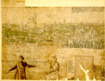

Byzantium sive Constantineopolis. [Door] Melchior Lorichs. Bladen [6]-[12], pentekening in sepia, 600 x 355 mm. [Constantinopel/Wenen, 1559 [1561(?)] -- (BPL 1758)
Plattegronden en prospecten van steden uit de zestiende en zeventiende eeuw zijn in meer dan één opzicht waarheidsgetrouw. Natuurlijk trachten ze een
betrouwbare afbeelding te geven, maar daarnaast speelde een geheel ander, moraliserend motief mee, namelijk dat van de roem en de verheerlijking van de stad. De faam was voor de stad in die tijd evengoed een zaak van realiteit. Zo is Jacopo de’ Barbari’s beroemde vogelvluchtkaart van Venetië uit 1500, bij voorbeeld, dan ook niet gemaakt om te dienen als gebruikskaart, of als een soort toeristische stadsplattegrond, maar ‘ad fama de questa excelsa cita de Venetia’.
Bewust aangebrachte vertekeningen waren het gevolg van deze artistieke benadering. De scheve parallelprojectie maakte het mogelijk dat de straatwanden zichtbaar bleven. Belangrijke gebouwen, vooral kerken, werden bij voorkeur naast elkaar afgebeeld en bovendien groter dan met de schaalverhouding in overeenstemming was. De beschermende gordel van vestingwerken, symbool van stedelijke onafhankelijkheid en vertrouwen in eigen kracht, moest opvallen. Uit de ornamentiek en de bijschriften kon men vaak aflezen dat de ontwerper iets meer heeft willen bieden dan een wiskundig bepaalde getrouwe weergave. De essentie van de stad in kwestie moest worden uitgebeeld.
Ook het in 1559 door Melchior Lorichs uit Flensburg (circa 1526 - circa 1585) getekende stadsgezicht van Constantinopel moet vanuit die visie worden geïnterpreteerd. Het is duidelijk waar voor hem de accenten lagen, getuige de talrijke bijschriften bij de topografie van de indrukwekkende reeks moskeeën en andere grote gebouwen en bij het drukke handelsverkeer van allerlei soorten schepen.
De kunstenaar heeft zichzelf afgebeeld, staande op een verheven plaats in de voorstad Galata aan de overkant van de Gouden Hoorn, terwijl hij met het prospect bezig is. Het is de vraag of we het ons zo mogen voorstellen. Papieronderzoek heeft een iets latere datering van de definitieve tekening aannemelijk gemaakt: 1561. Waarschijnlijk heeft Lorichs in 1559 ter plaatse, ‘ad vivum’, schetstekeningen gemaakt, die hij later, toen hij in Wenen verbleef, heeft uitgewerkt.
De bibliotheek heeft het prospect van Constantinopel te danken aan een schenking in 1598 door de schoonzoon van Janus Dousa, Nicolaas van der Wiele, rentmeester van de universiteit. Het behoort dus tot haar oudste bezit en wordt beschouwd als een van haar kostbaarste kleinoden. Er zijn eenentwintig bladen met een totale afmeting van 450 x 11.500 mm.
Literatuur
- Melchior Lorichs, Konstantinopel unter Sultan Suleiman dem Grossen aufgenommen im Jahre 1559. Hrsg. und erl. von Eugen Oberhummer. München 1902.
- Melchior Lorck. Drawings from the Evelyn Collection at Stonor Park, England and from the Department of prints and drawings of the Royal Museum of Fine Arts, Copenhagen. Catalogue by Erik Fischer. Copenhagen 1962, p. 24-28.
- J. Bolland, Die Hamburger Elbkarte aus dem Jahre 1568 gezeichnet von Melchior Lorichs. Hamburg 1964.
- Schatten uit de Leidse Bibliotheek. Leiden 1967, nr. 68.
- Leidse universiteit 400. Stichting en eerste bloei, 1575 - ca. 1650. Amsterdam 1975, p. 137.
- J. Schulz, ‘Jacopo de’ Barbari’s View of Venice: mapmaking, city views and moralized geography before the year 1500’, in: The art bulletin, 60 (1978), p. 425-474.
- Die Türken vor Wien. Europa und die Entscheidung an der Donau 1683. Wien 1983, p. 351.
C.J.A.C. Peeters, ‘Het stadsbeeld verwoord. Stadsplattegrond en stadsbeschrijving in de zestiende en zeventiende eeuw’. In: Stad en kaart. [...]. Alphen aan den Rijn 1984, p. 39-54.
| vorige pagina | top pagina |